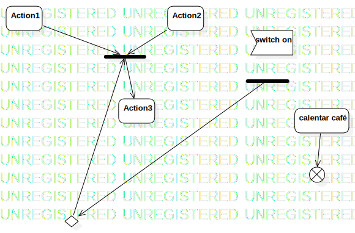

Activity1
UMLActivity
Untitled
::
Activity1
Description
none
Diagrams

ActivityDiagram1
Nodes
Action1
Action2
Action3
JoinNode1
switch on
ForkNode1
calentar café
FlowFinalNode1
DecisionNode1
Edges
(Action1→JoinNode1)
(Action2→JoinNode1)
(JoinNode1→Action3)
(calentar café→FlowFinalNode1)
(ForkNode1→DecisionNode1)
(DecisionNode1→JoinNode1)
Properties
Name
Value
name
Activity1
stereotype
null
visibility
public
isReentrant
true
isReadOnly
false
isSingleExecution
false
Owned Elements
ActivityDiagram1